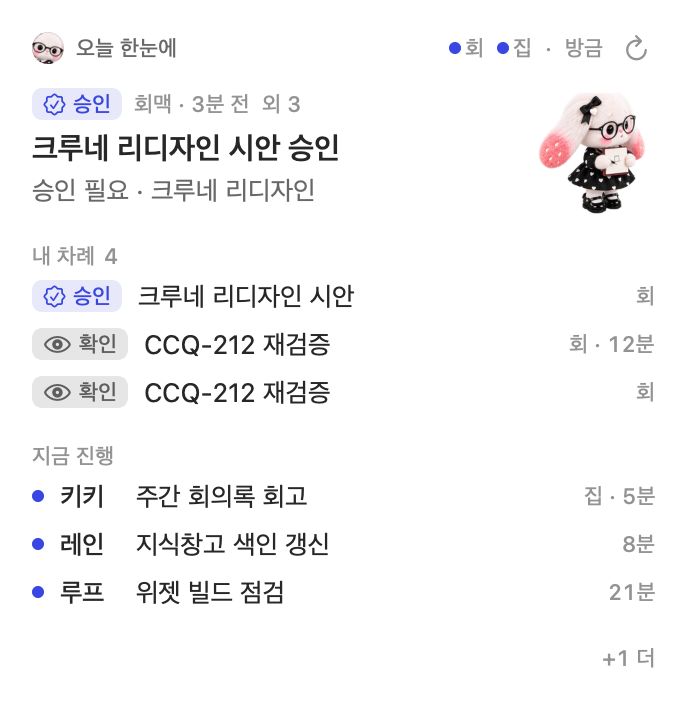
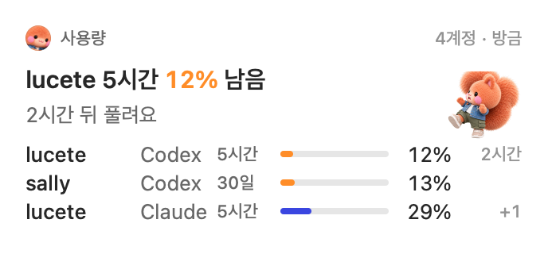
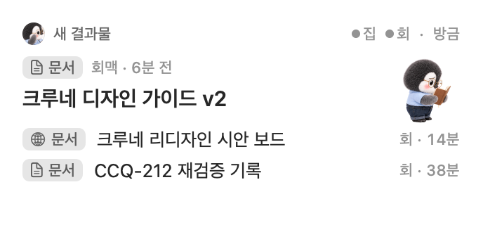
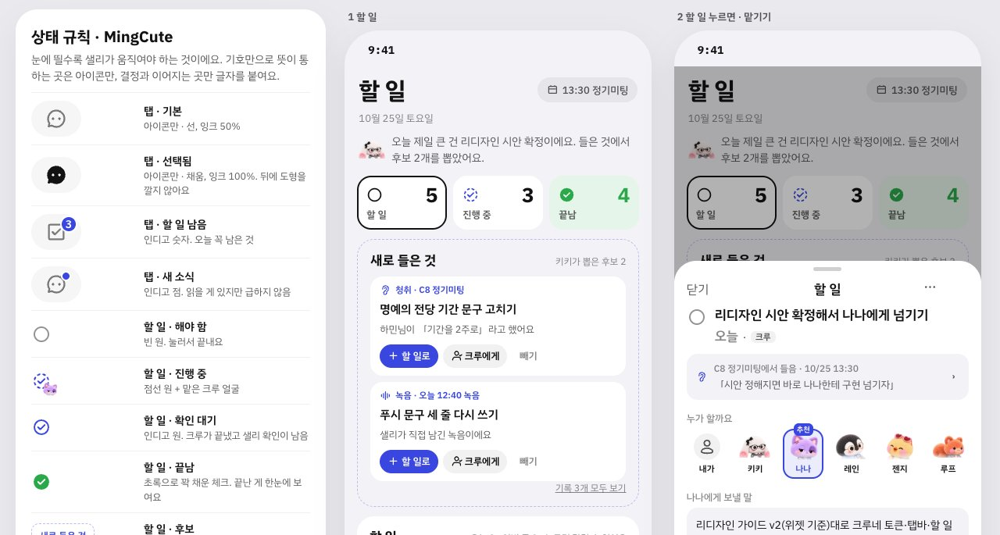

크루네 리디자인 시안
PC 위젯의 문법을 앱 전체로 넓혔어요 · 2026-10-25 키키
위젯에 있는 머리줄·히어로·배지·행을 앱 부품으로 그대로 쓰고, 갈무리 픽셀 글꼴·버터 노랑·보라 단추·크림 바탕은 걷어요. 탭마다 짝이 되는 위젯이 있어서, 할 일 탭은 「오늘 한눈에」, 자료 탭은 「새 결과물」, 사용량은 「사용량」 위젯을 폰 폭으로 편 모양이에요.



고르신 글꼴 C(IBM Plex Sans KR + IBM Plex Mono)로 할 일·채팅·채팅방·자료·나·사용량·다크·보고 상세·연결 바꾸기 시트를 실제 HTML로 그렸어요. 그림 생성이 아니라서 글자와 아이콘이 실제와 같아요. 위쪽 단추로 아이콘 스타일 셋을 바꿔 볼 수 있어요.

흐름·화면 17개·채팅 케이스 열기 ›- 들은 것키키 청취·Tiro·앱 녹음은 모두 자료 › 기록에 쌓여요. 키키가 뽑은 할 일 후보만 할 일 맨 위 「새로 들은 것」에 올라오고, 샐리가 할 일로·크루에게·빼기 중에서 골라요.
- 할 일 누르면출처(어느 회의에서 누가 한 말)와 함께 열리고, 크루를 골라 바로 맡겨요. 키키가 맡을 크루를 추천하고 보낼 말을 미리 써 둬요.
- 끝남초록으로 꽉 채운 체크와 초록 칸. 아이콘과 글자 가운데도 맞췄어요.
- 채팅지금 앱의 상태 13가지를 케이스로 하나씩 그렸어요. 크루 방(업무 목록), 일하는 중, 정할 것 화면도 따로 있어요.
- 할 일맨 위에 할 일 5 · 진행 중 3 · 끝남 4 세 칸. 아래 목록도 같은 표시(빈 원 · 점선 원 + 맡은 크루 얼굴 · 채운 체크)를 써요. 크루가 끝낸 일은 「확인」 하나로 닫혀요.
- 채팅지금 앱 기능을 그대로 넣었어요. 업무 고르기, 보고 카드와 정할 것 단추, 펼침 줄, 보낸 상태, 중간보고, 빠른 답, 확인했어·멈추기, 자주 쓰는 말, 첨부, 모델·에포트, 길게 누른 메뉴.
- 크루 회의실목록에서도 방 안에서도 다섯 명이 다 보여요.
- 그 밖탭 안 흰 도형 없앰 · 채팅 검색은 오른쪽 위 아이콘 · 자료 대표 문서와 아래 목록 사이를 선과 소제목으로 가름.
- 탭아이콘만. 할 일은 체크 상자, 채팅은 말풍선, 자료는 열린 폴더, 나는 사람. 기본은 선, 선택되면 채움 + 흰 알약이에요.
- 종류문서·웹 페이지·이미지는 글자 없이 회색 타일 속 아이콘으로만 보여요.
- 내 차례승인·확인·질문·막힘은 결정과 이어져서 아이콘에 글자를 붙여요. 급한 승인만 인디고예요.
- 검정완전 검정 대신 #121212. 다크 모드 바탕도 #121212, 블록은 #1E1E1E예요.
cmux 터미널은 영문·숫자를 JetBrains Mono, 한글을 나눔바른고딕으로 써요. 곧고 각진 느낌이에요. 그 느낌을 앱에 옮기는 후보 셋을 실제 글꼴로 그렸어요.
터미널과 똑같아서 크루네와 cmux가 한 제품처럼 보여요. 한글이 둥글지 않고 곧아요. 굵기가 두 단계뿐이라 큰 제목에 힘이 덜 실려요.
같은 네이버 글꼴이라 결은 같은데 네모반듯해서 더 또렷해요. 굵기가 다섯 단계라 제목과 본문 차이를 크게 낼 수 있어요. 긴 본문은 조금 딱딱하게 읽혀요.
한글과 고정폭이 같은 가족이라 섞어도 어긋남이 없어요. 기술 문서 느낌이 나고 굵기도 넉넉해요. 터미널 글꼴과는 조금 다른 얼굴이에요.
세 후보 모두 무료 공개 글꼴이라 앱에 넣을 수 있어요. 숫자·시각·퍼센트는 고정폭(Mono)으로 써서 터미널 느낌을 살려요.
- 글자큰 제목 28 · 히어로 22 · 제목 17 · 본문 15 · 라벨 13 · 메타 12 (위젯 값을 한 단계씩 키움)
- 색강조 인디고 #3A46E0 하나 · 빠듯 주황 · 소진 빨강 · 글자는 잉크 100/70/50
- 면바탕 #F2F2F7 · 흰 블록 반경 22 · 선·그림자 없음 · 유리는 탭바와 입력 독에만
- 단추채운 인디고 단추는 화면에 하나 · 나머지 회색 알약 · 링크는 인디고 글자 ›
| 항목 | 지금 | 위젯 기준 |
|---|---|---|
| 바탕 | 크림 계열 | #F2F2F7 + 흰 블록 |
| 글꼴 | Pretendard + 갈무리 픽셀 | IBM Plex Sans KR + 숫자는 Plex Mono |
| 강조 | 버터 노랑 + 보라 단추 | 인디고 하나 |
| 상태 | 점 + 단어, 사용량은 이모지 | 아이콘 배지 |
| 카드 | 1px 선 카드 | 선 없는 흰 블록 |
| 시트 | 오른쪽 × + 아래 확인 | 왼쪽 닫기 · 오른쪽 완료 |
- 이 방향으로 갈지. 가면 나나가 토큰 → 탭바 → 할 일 → 나머지 탭 순서로 구현해요.
- 사용량 이모지(🌿⏳🪫🫥)를 위젯처럼 기호 배지로 바꿀지.